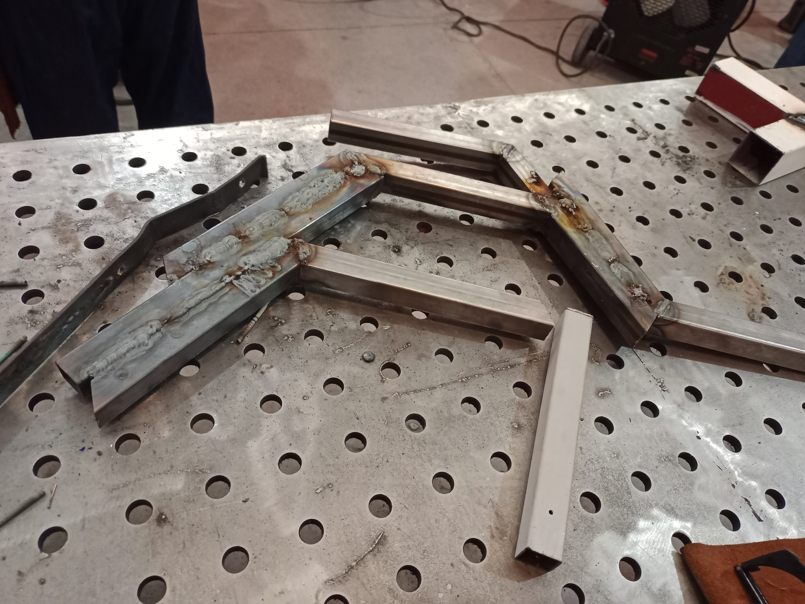
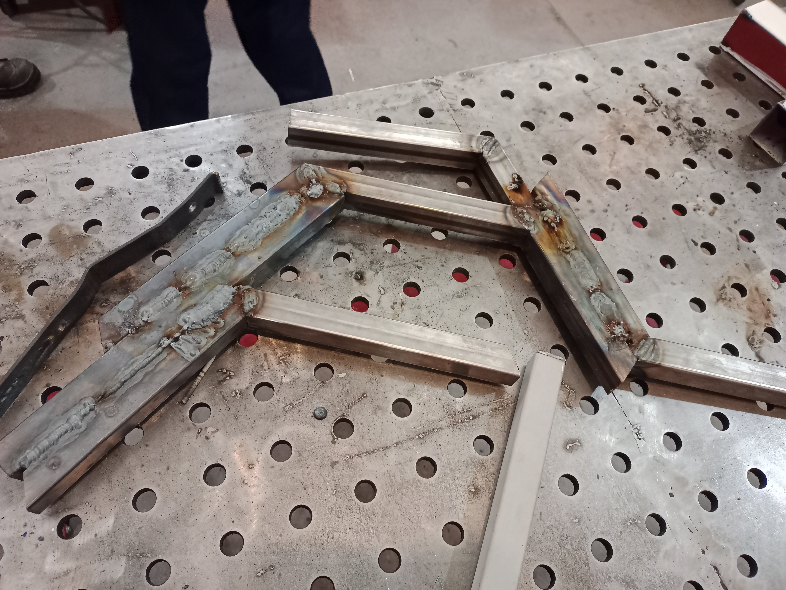
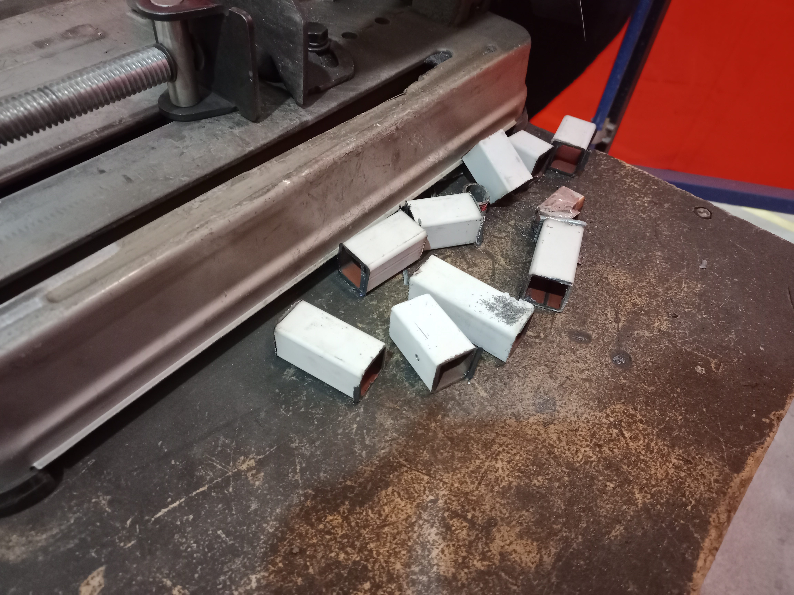
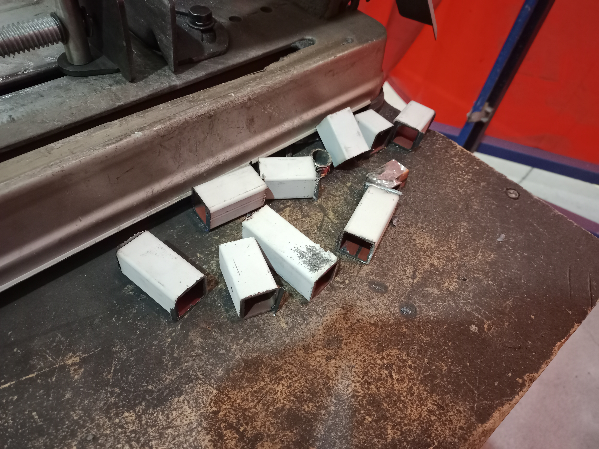
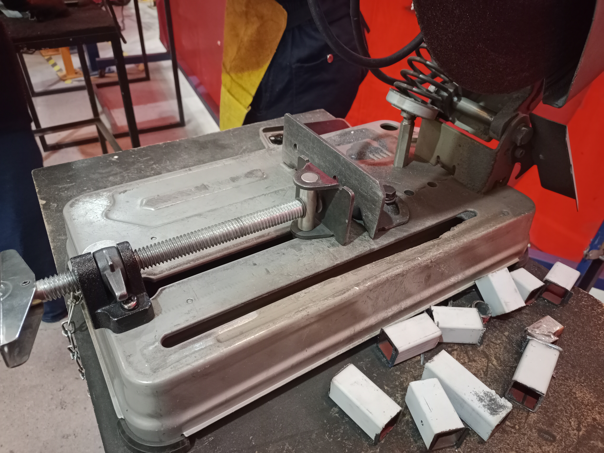
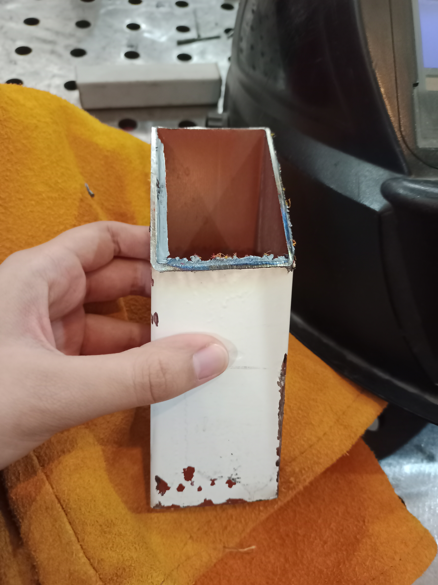
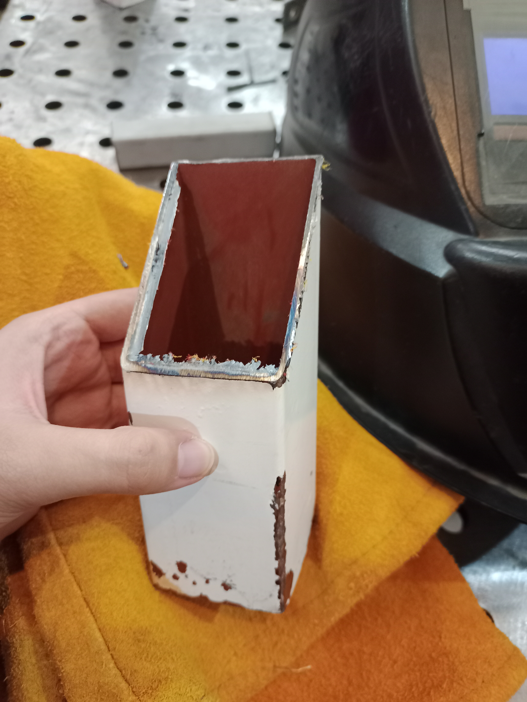
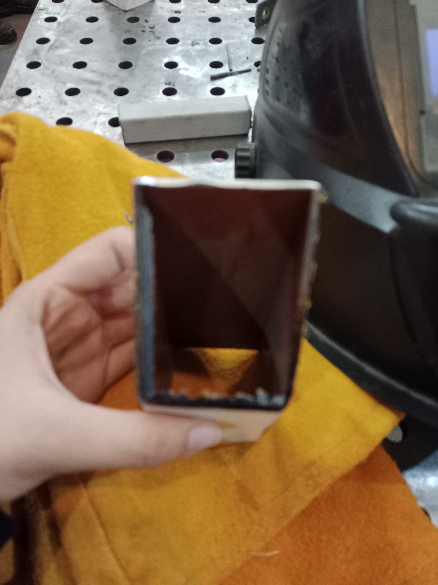
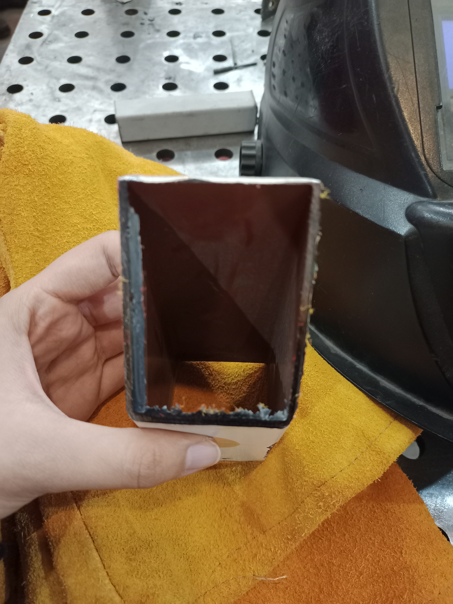

La soldadura de varilla, también conocida como soldadura manual por arco metálico (MMA) se refiere a un método de soldadura en el que una varilla de relleno en el portaelectrodos hace de electrodo de soldadura. El arco arde entre la varilla y la pieza de trabajo.
Una cortadora de metales (o tronzadora) funciona haciendo girar un disco de alta velocidad a través de un motor eléctrico para cortar piezas de acero, hierro o aluminio mediante fricción o impacto.
Arco eléctrico:Se genera una chispa eléctrica intensa entre la punta de la varilla y el metal base.
Calor y fusión:El calor funde tanto el metal que se quiere unir como el núcleo de la varilla.
Material de relleno:La varilla se consume poco a poco y aporta el material necesario para rellenar y asegurar la unión.
Protección del recubrimiento:protege la soldadura del aire para evitar defectos.
Motor eléctrico:Da potencia al eje para girar el disco a gran velocidad.
Disco de corte:Puede ser abrasivos (desbasta el metal por fricción y saca muchas chispas) o dentado (con dientes de carburo que cortan por impacto a menor velocidad y con más fuerza).
Prensa o mordaza:Sujeta el metal con firmeza sobre la base para que no se mueva durante el corte.
Protector o guarda: Cubre la mayor parte del disco para evitar que los residuos o fragmentos salgan hacia el operador.
Usa equipo de protección: Ponte un delantal de cuero, guantes largos para soldar, ropa de manga larga y una careta o máscara fotosensible para proteger tus ojos de la luz intensa.
1.-Soldadura


2.-Corte



3.-Lija




A lo que mas le debo tomar relevacia es sobre la seguridad que debemos tomar para usar cada una de la herramientas, sobretodo la soldadura, fue la primera y las mas riesgoza de manejar si no se usa el equipo de protección adecuado.
El aprendizaje de la union/corte del metal garantiza que en un futuro se logre un acabado mejor y exacto según espcificaiones para futuros proyectos.
Puedes contactarme a través de mi correo o redes sociales:
romina.velarde@iberopuebla.mx